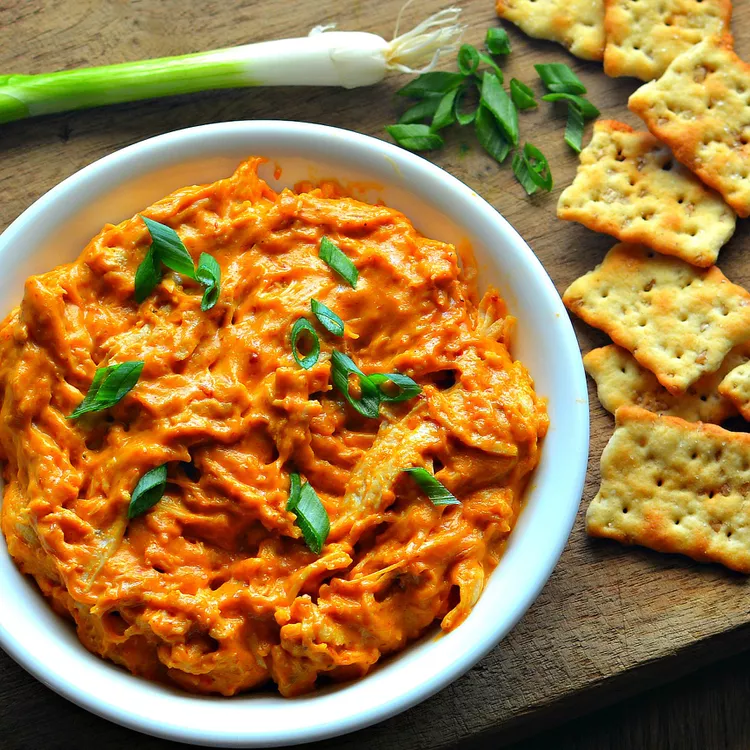

Buffalo Chicken Dip

This Instant Pot Buffalo chicken dip is easy to make if all you
have is frozen chicken breasts. They cook with broth in a pressure
cooker for just 30 minutes, are shredded, and then combined with
cream cheese, Sriracha, ranch dressing, chile-garlic sauce, and
cheese for a tasty Buffalo dip. Instructions for thawed chicken
are included.
Ingredients
- 2 (8 ounce) frozen chicken breasts
- 1 cup chicken broth
- 8 ounces cream cheese
- ½ cup sriracha sauce
- ½ cup ranch dressing
- 1 tablespoon chile-garlic sauce (Optional)
- 2 cups shredded Cheddar cheese
- 1 green onion, thinly sliced
Steps
-
One
Combine chicken breasts and broth in a multi-functional
pressure cooker (such as Instant Pot). Close and lock the lid.
Select high pressure according to manufacturer's instructions;
set the timer for 10 minutes. Allow 10 to 15 minutes for pressure
to build.
-
Two
Release pressure using the natural-release method according to
manufacturer's instructions for 10 minutes. Release remaining
pressure carefully using the quick-release method according to
manufacturer's instructions, about 5 minutes. Unlock and remove
the lid. Transfer chicken to a bowl and shred.
-
Three
Select Sauté function. Add cream cheese, Sriracha, ranch dressing,
and chile-garlic sauce to the pot. Stir in shredded chicken.
Add Cheddar cheese a little at a time, constantly stirring until
melted and all ingredients are well combined. Select Keep Warm
function until ready to serve. Garnish with green onions.
Home